Let  be holomorphic on an open set containing the closed disc
be holomorphic on an open set containing the closed disc
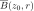
, and let be the boundary circle,
traversed once anticlockwise. Then for every
be the boundary circle,
traversed once anticlockwise. Then for every  with
with
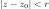
,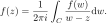
Fix inside. For small
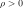
let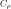
be the circle of radius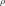
about. The function 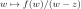
is holomorphic on the region between and ; cutting that
region into finitely many pieces each contained in a convex open subset
of the domain, and applying the vanishing of the integral on closed
curves in each piece, the contributions along the cuts cancel and
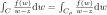
.On , parametrised as
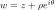
, one has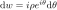
and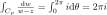
. Hence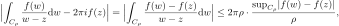
 as
as 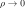
by continuity of at .
Since the left-hand integral does not depend on , it equals
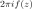
.
A holomorphic on an open  is analytic: about every
is analytic: about every
 it is the sum of a power series
it is the sum of a power series
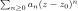
converging on every disc with
with 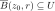
, and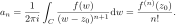
has derivatives of every order, and they are
holomorphic.
For  on and
on and
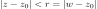
, expand the kernel as a geometric series,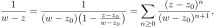
on for fixed , the ratio
having modulus 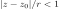
; the Weierstrass test applies with the terms dominated by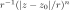
. Multiplying by the bounded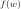
preserves uniform convergence, so the series may be integrated term by term in the Cauchy formula, giving the power series with the stated coefficients. A power series is infinitely differentiable inside its disc of convergence with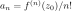
, and each derivative is again given by a power series, hence holomorphic.With the notation above,
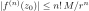
, where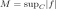
.
Apply the standard estimate to the integral formula for  : the
length of is
: the
length of is
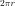
and the integrand has modulus at most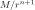
, so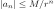
; multiply by .
.
A bounded entire function is constant; and every non-constant
polynomial over  has a root, hence splits into linear factors.
has a root, hence splits into linear factors.
Let  on . For any
on . For any  and any
and any
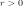
the Cauchy estimate with gives
gives 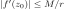
; letting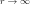
gives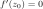
. So on the
connected set and is constant.
on the
connected set and is constant.
Let
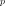
be a polynomial of degree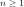
with no root. Then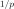
is entire. Writing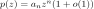
as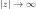
, we get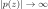
, so tends to at infinity and is therefore bounded – it is continuous, hence
bounded on any large closed disc, and small outside it. By the first
part is constant, contradicting . So has a root
 , and the factor theorem splits off
, and the factor theorem splits off 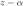
; induction finishes.
Let be continuous on an open with
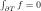
for every closed triangle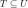
. Then is holomorphic.
The question is local, so work on a disc
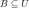
, which is convex. The construction of a primitive used only Goursat's conclusion on triangles and the continuity of, both assumed here, so there is
a holomorphic  on
on  with
with  . By the previous theorem
is analytic, hence infinitely differentiable, so
. By the previous theorem
is analytic, hence infinitely differentiable, so  is
holomorphic.
is
holomorphic.
Morera's theorem is the converse of Cauchy's and it is what makes limits usable: a locally uniform limit of holomorphic functions is holomorphic, because the integral over each triangle passes to the limit. In real analysis a uniform limit of smooth functions need not be differentiable anywhere, and the contrast is the sharpest available statement of how strong complex differentiability is.